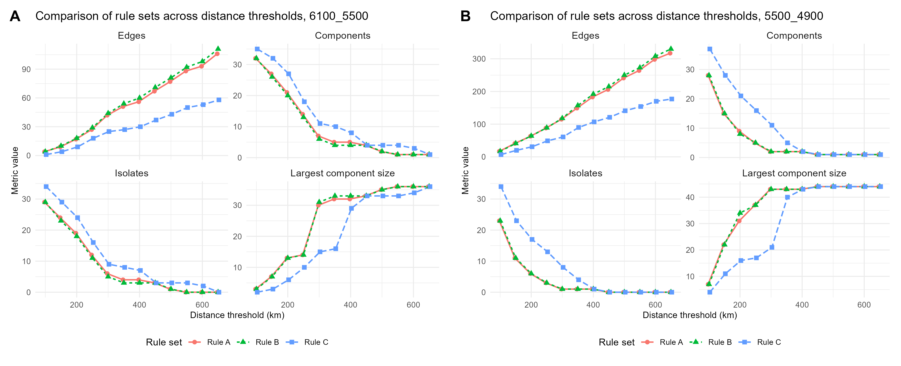
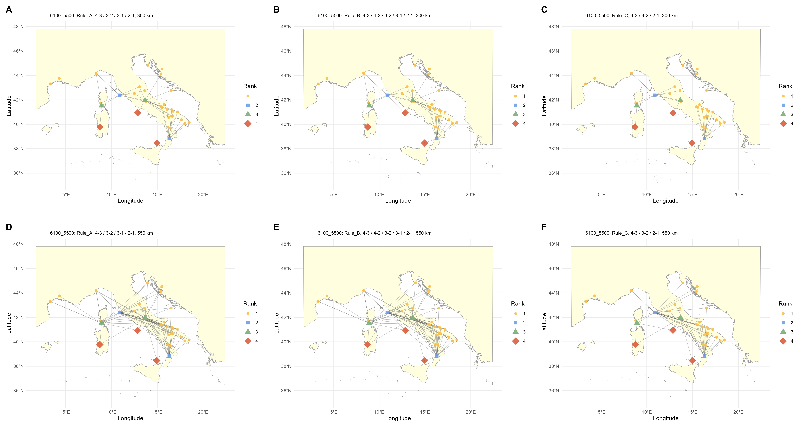
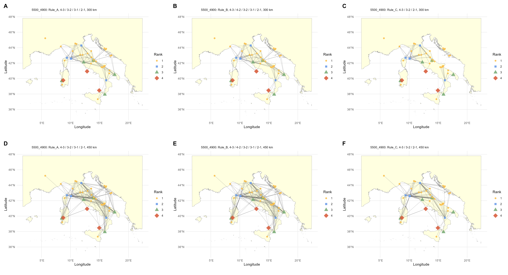
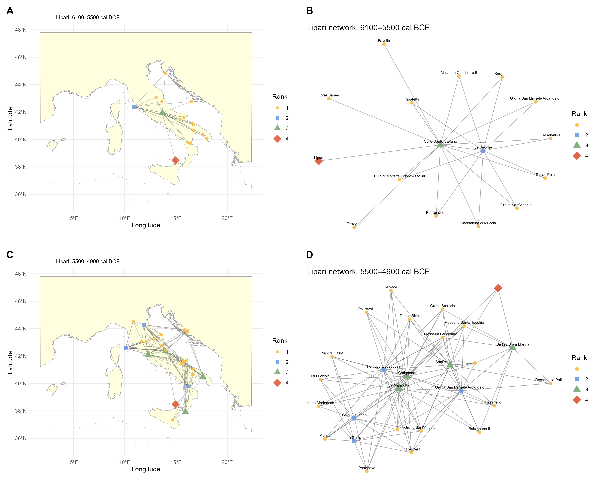
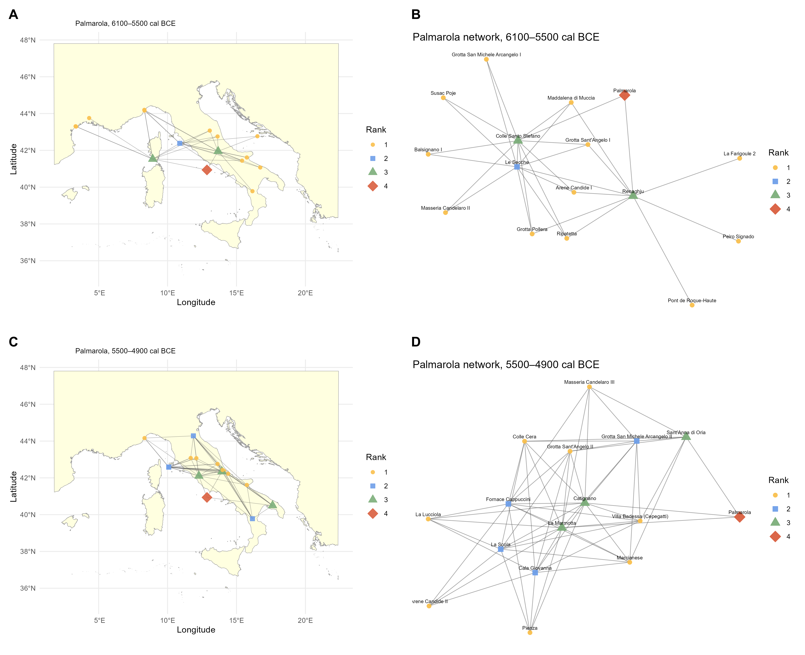
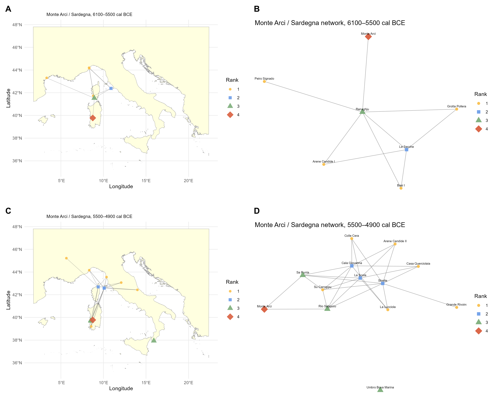

Modelling Obsidian Production and Circulation across the Central Mediterranean, 6100–4900 cal BCE
This page explains what the CHRONOS workflow does, how to reproduce it, how to interpret its sensitivity tests, and which files contain the principal results. It is a readable companion to CHRONOS.R and the README.
The workflow combines technological counts, chronology, provenance and location for 74 archaeological contexts. The primary classification asks how strongly each site contributes to the documented technological obsidian corpus, while the network analysis explores how different connection rules and distance thresholds affect potential connectivity.
CHRONOS/
├── CHRONOS.R
├── CHRONOS_report.html
├── README.md
├── RAWDATA/
│ ├── obs_data_corr.xlsx
│ ├── obs_data_corr_6100_5500.xlsx
│ └── obs_data_corr_5500_4900.xlsx
├── MAP/
│ └── map_shp.shp (+ .dbf, .shx, .prj)
└── OUTPUTS/
├── Obsidian_network_6100_5500/
├── Obsidian_network_5500_4900/
└── Figures/
The four technological variables are blade, flake, core and by.products.waste. The analytical denominator excludes technologically indeterminate pieces.
For each technological category, each site is expressed as its percentage contribution to the total documented amount of that category across the full dataset. The four category contributions are then summed:
Production_score = blade.PN + flake.PN + core.PN + by.products.waste.PN
This is deliberately different from converting each site to internal percentages. The primary score retains both technological composition and quantitative scale.
| Rank | Criterion | Operational meaning |
|---|---|---|
| 1 | below 80th percentile | lower documented technological involvement |
| 2 | 80th–90th percentile | intermediate documented technological involvement |
| 3 | upper decile | highest documented technological involvement |
| 4 | geological source node | Monte Arci, Lipari or Palmarola |
Pairwise Manhattan dissimilarities are calculated on the same contribution matrix used to derive the score. PERMANOVA and PCoA therefore describe the geometry of the rank structure in contribution space; they are descriptive diagnostics, not independent validation of the classification.
The current workflow and repository use Manhattan filenames. Obsolete BR-named files from earlier versions have been removed.
The reviewer concern was whether very large assemblages might dominate the classification. The workflow addresses that concern in two different ways.
Each technological count is square-root transformed before repeating the same contribution scaling, score calculation and percentile ranking. This reduces the influence of very large assemblages without discarding quantitative differences.
Within-site relative frequencies are converted to a Manhattan distance matrix and compared with the primary contribution-based distance structure using a Spearman Mantel test. Because this standardisation removes assemblage magnitude completely, it asks a different question: whether assemblages have similar internal technological proportions irrespective of how much obsidian is documented.
The network grid is also rerun using the square-root ranks. The preferred Rule A first-full-connectivity thresholds remain 550 km in the earlier interval and 450 km in the later interval. Thus, reducing the leverage of the largest assemblages does not change the principal Rule A spatial result.
Ranks are calculated once from the complete 74-site dataset and then transferred to the two chronological subsets:
| Rule | Permitted rank connections | Interpretive difference |
|---|---|---|
| A | 4–3, 3–2, 3–1, 2–1 | direct source links restricted to Rank 3 |
| B | 4–3, 4–2, 3–2, 3–1, 2–1 | also allows source-to-Rank 2 links |
| C | 4–3, 3–2, 2–1 | only consecutive-rank links |
Rules A–C are evaluated from 100 to 650 km in 50-km steps. Distances are centre-to-centre geographical distances after projection to EPSG:3035.
| Interval | Rule A | Rule B | Rule C |
|---|---|---|---|
| 6100–5500 cal BCE | 550 km | 550 km | 650 km |
| 5500–4900 cal BCE | 450 km | 450 km | 450 km |
Rule A is the preferred parsimonious interpretative scenario because it obtains broad connectivity without adding the direct source-to-Rank 2 links permitted under Rule B. That preference is a modelling choice, not independent evidence that prehistoric circulation literally followed Rule A.
| Interval | Rule A | Rule B | Rule C |
|---|---|---|---|
| 6100–5500 cal BCE | 550 km | 550 km | 550 km |
| 5500–4900 cal BCE | 450 km | 450 km | 450 km |
The early Rule C shift from 650 to 550 km is retained here for transparency. The principal Rule A result is unchanged.
Separate source-filtered networks are produced for Lipari, Palmarola and Monte Arci (internally named Sardegna). Only sites with explicit source presence are retained. Site ranks still refer to the total obsidian assemblage, because provenance and technological category are not systematically linked at artefact level in the available evidence.
| Interval | Source | Nodes | Edges | Connectivity |
|---|---|---|---|---|
| 6100–5500 | Monte Arci/Sardegna | 7 | 9 | connected |
| 6100–5500 | Lipari | 16 | 25 | connected |
| 6100–5500 | Palmarola | 16 | 30 | connected |
| 5500–4900 | Monte Arci/Sardegna | 13 | 26 | 2 components; 1 isolate |
| 5500–4900 | Lipari | 27 | 109 | connected |
| 5500–4900 | Palmarola | 16 | 59 | connected |
Rule A is attempted first for each source. Rule B is only a fallback if the Rule A filtered graph is empty, has no edges, lacks the source node or leaves the source isolated. No fallback is used in the current reference run.
Figure 1 is generated as OUTPUTS/all_sites_numbered_black_white_map.png. Figure 2 is the conceptual schematic of connection rules and is prepared outside the R workflow.
Figures 3–8 are automatically assembled in OUTPUTS/Figures/ as PNG and LZW-compressed TIFF files.
| Figure | Content |
|---|---|
| 3 | rule-set comparison: earlier interval left, later interval right |
| 4 | earlier general networks: Rules A/B/C at 300 km above, 550 km below |
| 5 | later general networks: Rules A/B/C at 300 km above, 450 km below |
| 6 | Lipari source-confirmed networks |
| 7 | Palmarola source-confirmed networks |
| 8 | Monte Arci/Sardegna source-confirmed networks |






| File | Use |
|---|---|
OUTPUTS/site_production_score_ranking_all_sites.csv | primary site scores and ranks |
OUTPUTS/production_score_rank_thresholds_all_sites.csv | 80th/90th percentile thresholds |
OUTPUTS/sensitivity_rank_comparison_all_sites.csv | primary vs square-root rank for every site |
OUTPUTS/sensitivity_summary_all_sites.csv | Spearman, agreement, Jaccard and Mantel statistics |
OUTPUTS/composition_only_manhattan_dissimilarity_all_sites.csv | composition-only distance matrix |
OUTPUTS/Obsidian_network_*/global_metrics_rule_distance_sweep_*.csv | complete rule-distance network metrics |
OUTPUTS/Obsidian_network_*/first_connected_network_by_rule_*.csv | primary first-full-connectivity thresholds |
OUTPUTS/Obsidian_network_*/first_connected_rank_sensitivity_sqrt_*.csv | square-root network sensitivity thresholds |
OUTPUTS/Obsidian_network_*/source_confirmed_metrics_*.csv | source-filtered network summaries |
source("CHRONOS.R") from the repository root.unmatched_sites_no_rank_*.csv files contain only their header.rank_summary_all_sites.csv gives 59 / 7 / 8 sites.sensitivity_summary_all_sites.csv.